Steps 06—08 / Before application coding
Prepare the next move.
Security, recovery, release and evidence plans for the two-service platform. Compare the trade-offs, then carry the explicit build gate into implementation.
Step 06 / Prepared documentation
Security and recovery — pre-build design
Accepted proposal commitments remain fixed. Recommended defaults await team confirmation. All runtime results are not run.
Design previews
Open shared editable tldraw boardSaved SVG previews do not update automatically after board edits.
Durable intake and irreversible lease recovery


Commitments and defaults
Accepted proposal: two services, separate database roles, AWS containers, web and CLI; recovery and security targets remain unchanged. This pack is design only: all runtime tests are not run.
Recommended defaults below permit later local implementation. Team confirmation means recording a choice; clicking a website modal only changes the viewer’s review state and grants no approval. Fictional planning personas remain P-01 Maya, P-02 Arun, P-03 Jules and P-04 Sam.
Threat and trust matrix
| Boundary / threat | Control to implement | Evidence |
|---|---|---|
| Client → MM / stolen session, operator abuse | Secure HttpOnly session cookie for web and CLI cookie jar; inherited expiry/hash; same-origin/CSRF check on mutations. MM checks owner on every asset API including list, HLS, edit, delete and retry; operator privilege checked before forwarding a specific owner. Logout clears cookie but does not revoke a stolen token. | E-08; CT-10/18/19 |
| MM ↔ P / forged owner or token | MM, P API and source-fetching workers join private interservice bridge; worker calls MM source-access directly. Distinct MM→P and P→MM secrets; reject missing/wrong-direction token. Every internal API requires owner; compare header/body/stored owner, constrain lists, never permit owner mutation. Reverse source endpoint checks live Asset/revision locally. | E-08; CT-04/09 |
| Source URL / SSRF and capability leak | 900s single-object GET; exact configured HTTPS origin/port and source-prefix allowlist, immutable descriptor/digest/size checks; reject userinfo, IP literals, unconfigured hosts and redirects. No arbitrary URL/key input; redact URL query. Refresh before claim download if expired or insufficient lifetime. | E-08; CT-08/09 |
| Object stores / excessive credentials | Three mounted principals: MM source read/write/delete + output read/sign; worker output Put + minimal multipart, no Delete or source access; separate P cleanup output List/Delete. Private objects and scoped prefixes. No S3 host profile; containers blocked from IMDS. Source reads use signed GET only. | E-08; CT-10 |
| Databases / default privilege escape | Separate media_runtime and processing_runtime; own CONNECT/DML only; revoke PUBLIC CONNECT/TEMP and schema CREATE/unwanted USAGE. Isolated migration owners, no cross-role membership, extensions or runtime DDL; test opposite database refusal and correct DML. Shared PostgreSQL network cannot isolate logical databases; roles enforce this boundary. | E-08; CT-15 |
| Upload / overload or deceptive input | 100 MiB FILE bytes, sniff type/container and enforce geometry/operations. Allow bounded multipart overhead at nginx and middleware; adjust inherited global Content-Length guard. Test exact 100 MiB, +1 byte, overhead and streaming request. | E-08; CT-20 |
| Release / leaked secrets and vulnerable images | Secrets outside git/images/logs; fail on secret findings or failed tests; zero fixable HIGH/CRITICAL image findings. Record static/dynamic scan execution and triage, rather than claiming all report-only scanners block findings. HTTPS alone public. | E-08/E-07 |
Residual risk
A compromised trusted service token can fabricate forwarded human identity, especially for new Assets: stored-owner checks cannot prove genuine user intent. Private routing and least privilege limit exposure; isolate/replace compromised secrets operationally. Full key rotation, malware scanning and multi-zone failover remain outside scope.
Presigned links are bearer capabilities until expiry. A deleted source may already be downloaded. Cancellation fences publication; it cannot erase another process’s memory.
Attempt fencing and liveness
Recommended: heartbeat every 15s, lease expires 60s after the last successful heartbeat, recovery sweep every 15s; queued-age threshold 30s with scan every 15s. Use database time. These replace inherited long timers and require measurement, not just configuration.
Claim atomically checks current reserved attempt ID, queued state and live job, and sets processing/lease. Only the conditional first-claim winner may encode; every duplicate-claim loser exits. Heartbeat and completion require that current attempt ID, processing state, live job, and an existing lease strictly later than database now. An expired lease cannot be resurrected. Cancel atomically tombstones/invalidates the current attempt. Recovery uses the same conditional state predicates.
On rejected heartbeat, stop/kill the FFmpeg process group immediately; if DB is unreachable, kill by the locally tracked last confirmed lease expiry, with conservative clock margin. Uploads use attempt prefixes; only a valid unexpired completion may publish verified primary output. A stale worker cannot overwrite a winner.
Never hold a database lock during HTTP, Redis, object I/O or FFmpeg. A claim is a durable fence, not a long transaction. Heartbeat supervisor must remain responsive while FFmpeg is running.
Failure protocols
| Injection | Durable mechanism and visible outcome | Bound / limitation |
|---|---|---|
| Kill worker mid-encode | P sweep marks expired processing attempt failed (interrupted), revokes claim, records cleanup. Owner explicitly retries stored source with stable retry_request_id; exactly one new attempt. Old output cannot publish. | ≤60+15s detection design budget, ≤5min acceptance target; retry must succeed without duplicate published outputs. |
| Remove queue entry, retain RQ hash | DB queued current attempts are authority. Inspect actual ready/deferred/scheduled membership and valid claimed state, never RqJob.exists alone. Atomically repair or replace orphan RQ bookkeeping for deterministic job+attempt dispatch under short queue-repair coordination; duplicate messages lose conditional claim. | Queued age ≥30s; next scan ≤15s; ≤2min from injected loss to restored runnable entry. Redis/DB and reconciler must remain available. |
| P unavailable during upload | MM commits immutable source + pending Asset/request key before 202. Show queued/submission_status=pending; submitted reads return 503 while P is down. Durable next_submit_at survives restart. Replay identical asset/fingerprint, refreshing URL only. | One bounded HTTP send per reconciliation tick; delays 2/4/8s up to 60s plus jitter. Durable periodic reconciliation continues until submitted, deleted or environment reset. Alert at 5min pending; escalate at 30min and retain an operational issue until resolved. Public response remains queued/submission_status=pending, without an error field; no pause/resume command. |
| Process crash versus host outage | Process crash with DB/reconciler surviving uses above bounds. Shared host outage stops workers and recovery together; durable volume recovery/restart and reconciliation are prerequisites. | No ≤5min host failover claim. Measure outage and restart separately; no invented backup/restore result. |
Timeouts, transport retries and errors
Recommended private HTTP connect timeout 2s, total 5s. Three bounded transport retries after the initial request (maximum four sends), delays 1/2/4s with jitter; retry only connection uncertainty, 429 with bounded Retry-After, or 502/503/504, and only with stable idempotent identity. One upload foreground Submit send has a 5s budget; durable reconciliation uses one send per scheduled tick, not nested retry loops. Never sleep or retain DB locks inside intake.
One explicit user retry creates exactly one encode attempt, regardless of transport replays; there is no three-encode-attempt budget or automatic encode retry default. Source refresh/download: connect 2s, idle 15s, total 120s; at most three transport retries, restart to a fresh temporary file, verify descriptor before encode. Publication and delete retries retain the same attempt/object identity. Download or upload budget exhaustion fails the attempt visibly; user retry remains explicit.
Taxonomy: 401 authentication; 403 operator/CSRF; 404 hidden absent/wrong owner; 409 payload/revision/state conflict; 410 retained deleted replay; 413 file size; 415 type; 422 admission structure; 503 downstream/consistency. Attempt failures: interrupted, source_unavailable, source_invalid, encode_failed, output_failed. Plain uploads require verified MP4 primary output to mark done. Inherited MKV/MP3 edits require their verified primary output as specified in step 05; HLS failure is a best-effort warning. Expose safe code/message/request ID, never credentials or raw FFmpeg input.
Delete, source refresh and orphan cleanup
MM tombstones and records cleanup intent atomically, then cancels by asset_id. P submit/cancel share an owner-bound submission guard: cancel-first rejects later submit; submit-first invalidates its attempt. Keep guard throughout demonstration; retained keys/tombstones ≥7 days and until cleanup ends. New grants fail immediately after MM deletion. Delete source only after P cancellation acknowledgment; repeat cleanup safely.
Recommended orphan scan every 15min with 1h grace: remove only staged sources absent from committed/in-flight intake records, or failed/stale attempt prefixes absent from winning refs and active leases. Keep a staging reservation during slow intake. An unexpired active attempt is never an orphan. Source deletion cannot remove a derived Asset’s independent source copy. Cleanup failures retain intents and alert after 5min; never report physical deletion just because 204 returned.
Decision index
Open any comparison to inspect every option. These buttons do not approve the plan.
Downloads & sources

- §2.3–2.5; §3.3–3.4; §4 Accepted proposal; initial targets retained. Resolve actual proposal via roadmap source index.
- status-projection; internal-contracts; transactions; privileges Prepared contracts, not running behavior.
- F-01; D-01 Accepted scope; working local baseline 8854537 supersedes historical 890c5ec.
- steps 06–08; milestones Planning obligations and course dates; no runtime evidence.
Step 07 / Prepared documentation
AWS deployment and delivery plan
Accepted proposal commitments remain fixed. Recommended defaults await team confirmation. All runtime results are not run.
Design previews
Open shared editable tldraw boardSaved SVG previews do not update automatically after board edits.
Physical deployment

Release pipeline

Accepted scope, planned defaults
Documentation only. Baseline 8854537 is selected locally; no upstream or AWS account access is required. All builds, releases, security tests and runtime measurements are NOT RUN.
Accepted proposal: two services, two owned databases/roles/migration histories on one PostgreSQL server, AWS containers, CLI plus existing web, private media, HTTPS, independent automated releases and 1/2/3 workers at 2 vCPU each. The proposal target table remains unchanged.
Recommended plan: one nonburstable x86 EC2 host with at least 8 vCPU, Compose, self-hosted PostgreSQL and Redis/RQ, managed S3, ECR, SSM and CloudWatch. Region ap-southeast-1 is a provisional Singapore assumption; SKU availability, memory sizing, account permission and budget remain unconfirmed.
Website choices and status clicks are personal review aids. They do not approve spending, deployment, or a proposal amendment.
Physical architecture
Single-AZ demo: one EC2 host in a public subnet with an internet route and one public IPv4 address. Security-group ingress permits only TCP 443; no public SSH, API, PostgreSQL, Redis or administration ports. SSM Agent uses outbound HTTPS. This shared host is a single failure domain.
nginx terminates TLS, serves the inherited frontend and routes /api only to Media Management. Use DNS-01 certificate issuance/renewal with narrowly scoped DNS permission; port 80 stays closed. An ACM-capable ALB/CloudFront edge is an optional priced alternative, not an nginx certificate assumption.
Separate Compose projects/networks and version manifests per service: MM plus its submission/cleanup reconciler; Processing API, workers and recovery task. MM, the Processing API and source-fetching Processing workers join the private interservice bridge so workers can call MM source-access directly. Workers expose no public listener. Both service data paths reach the same PostgreSQL listener; networks cannot isolate logical databases there. Own roles/grants enforce logical database separation; Redis is Processing-only.
S3 source/output objects are private, encrypted and blocked from public access. Their HTTPS endpoints are internet reachable; authorised presigned GETs use those endpoints. This is object-access privacy, not a private-only network. Durable PostgreSQL/Redis volumes use encrypted EBS; FFmpeg scratch is disposable.
Workload credentials and residual risk
Recommended demo compromise, requiring team confirmation: three restricted S3 workload credentials in SSM SecureString, injected by trusted host bootstrap into separate root-owned service files outside git/images. Mount only the matching secret read-only; no Docker socket, privileged container or host network. Host instance role has SSM, exact ECR pull/log and parameter-decryption permissions, but no S3 or AssumeRole workload permissions.
MM, worker and Processing cleanup receive separate secret mounts. A worker uses its local digest and successful upload/checksum acknowledgement to validate publication. If the storage adapter needs HeadObject/Get for remote verification, design a narrower verifier role and review the extra credential before implementation; do not silently give workers read/delete rights or call them write-only.
Block all container access to IMDS IPv4/IPv6 with host forwarding rules; require IMDSv2 for host use. Verify this from every container; hop limit alone is not the isolation proof. Host administrators and host compromise can still read all workload secrets. Separate files do not create a hard security boundary.
Rotate restricted demo keys before demonstrations and after exposure; revoke/delete them and their injected copies at teardown. No IAM console/password or account-wide S3 permissions. These are temporary demonstration credentials, not a full rotation platform.
Short-lived STS service credentials are the stronger credential default, but Compose needs a trusted broker that assumes separate roles, refreshes credentials before expiry, safely injects them and survives refresh failures. Giving the shared host both AssumeRole privileges does not isolate containers unless IMDS is blocked and the broker is protected. This added lifecycle is deferred for the demo.
If strict workload isolation is required, choose separate Fargate tasks with distinct task IAM roles; execution roles handle image pull/log delivery. Do not place MM and Processing in the same task. Budget and additional environment work must be confirmed.
| Principal | Allowed scope | Boundary |
|---|---|---|
| MM S3 principal | Source Get/Put/Delete within owned source prefixes; output Get only | Can sign source and output reads; cannot write/delete outputs |
| Worker S3 principal | Output PutObject only under owned attempt prefixes; minimal multipart permissions if needed | No source, Get/Head, List or Delete. Validate upload response/checksum and local digest before publishing; no claim of remote HeadObject verification. |
| Processing cleanup S3 principal | Output prefix-scoped ListBucket and DeleteObject only | Separate cleanup/recovery mount, never worker mount; no source access. |
| Runtime database roles | media_runtime → media_db; processing_runtime → processing_db | Revoke PUBLIC CONNECT/TEMP and schema defaults; no cross-role membership |
| Migration credentials | Separate owner credentials, mounted only for one-off own-service migration | Never mount in runtime API/workers |
| Service tokens | Different MM→P and P→MM tokens, separate mounts | Owner checks stay mandatory; never log tokens or signed URL queries |
Fair worker capacity and persistence
Reserve 6 vCPU for the three 2-vCPU workers and at least 2 vCPU headroom for APIs, database, queue, nginx and recovery. CPU quota is not reservation: assign worker cpusets/host controls so they cannot consume the headroom; verify effective cgroup limits and actual CPU contention before experiments. Record x86 architecture, SMT topology, memory, disk I/O and FFmpeg settings; 8 vCPU is a minimum, not a performance guarantee.
Keep the same host, fixture hashes, CPU/memory limits and encoder settings for the 1/2/3-worker comparison. Measure and tune scratch/memory limits before final tests; do not compare burst-credit or architecture changes. No SKU or regional capacity is asserted.
PostgreSQL owns durable state; RQ is delivery, not authority. Redis persistence helps restart recovery but the step-06 reconcilers must repair missing queue entries from committed attempts. Back up both databases and retain source/output objects with documented lifecycle rules. A backup restore is planned and NOT RUN; host failure may lose recent writes since the last backup.
Processing-only deployment drains/quiesces new claims, gives active work a bounded finish interval, then relies on step-06 leases/attempt fencing for interruptions. Durable winning outputs survive image rollback. Changing worker count must not restart MM.
Step-06 alignment: fence completion with the current attempt ID, without an extra nonce. Durable pending submission continues with bounded tick/backoff; alert at 5 minutes and escalate at 30 minutes. No new pause/resume operator command is introduced.
Automated per-service releases
Planned triggers: every PR gets lint, unit/frontend, integration, contract and boundary checks without deployment credentials. A reviewed merge builds/scans changed-service images; shared-contract changes test both. Pin action/tool versions, retain reports, publish version plus commit and immutable digest to separate ECR repositories.
Mandatory blockers: failed tests; exposed secrets; fixable HIGH/CRITICAL image findings. The inherited known fixable HIGH finding must be resolved and a clean scan attached before release; no resolution is claimed here. Sonar currently skips without configuration and continues on findings; ZAP findings are report-only while scan execution errors fail.
Recommended explicit triage policy: configure and retain Sonar/ZAP reports, block promotion for untriaged findings and confirmed high-risk boundary flaws; every remaining finding gets owner, disposition, rationale and due date. A skipped required scan needs an explicit recorded exception. This is a proposed promotion policy, not an existing gate.
Recommended manual promotion gate authorises the exact candidate digest in the deployment environment. After promotion, OIDC obtains a short-lived deployment role and SSM runs the bounded release routine automatically: pull digest, own migration, service replacement, readiness and CLI smoke. Manual promotion does not mean manual deployment.
OIDC trust must pin audience sts.amazonaws.com and the actual team repository/environment subject once D-02 is resolved. Separate build/push and deploy roles. Scope deployment to the tagged demo host and approved SSM document; no arbitrary shell/document execution, S3 workload access or bootstrap admin permissions. Serialize deployments on the shared host.
Record service/commit/digest, migration revision, start/end timestamps, MM digest before/after and checks. Measure UC-7 against the unchanged ≤10-minute target; start the clock at the first automated release action AFTER promotion approval and gated artifact readiness, BEFORE OIDC/SSM dispatch, pull or migration; stop at smoke pass. Exclude manual-gate wait and report it separately; include any automation queue wait after that start. No measured time exists.
Release and rollback runbook
- Preflight: identify changed service, previous digest and own schema revision; verify all gates/reports and backward compatibility with the still-running peer. Snapshot/backup own database before a risky migration.
- Expand first: apply additive own-service migration using its migration credential. Never run media_db migrations for a Processing-only release. Defer destructive contraction until the rollback window closes; prove old image works with new schema.
- Deploy via SSM: validate an allowlisted digest, pull it, stop new claims if Processing, drain bounded active jobs, replace only that project’s API/worker/recovery containers. Preserve volumes and record transition events.
- Readiness then smoke: test internal authenticated/owner-filtered boundary, register/login with HTTPS CLI cookie jar, upload a fresh fixture with stable key, poll to completion, retrieve authorised MP4 and HLS when available, retry/list/delete compatibility and verify cross-owner denial. Capture redacted logs and clean the demo asset.
- On failure: prevent promotion success, revert only changed-service image digests, restart its dependents and repeat readiness/smoke. Keep additive schema; do not blindly downgrade migrations or restore the shared server. A non-backward-compatible migration requires a tested restore/forward-fix plan and explicit interruption decision.
- Capture failures honestly: smoke timeout, job failure, readiness failure and rollback outcome are separate evidence. Stop further releases if recovery fails; do not write successful deployment evidence from a website status.
Local/cloud configuration and secret inventory
| Concern | Planned local / cloud setting | Rule |
|---|---|---|
| Local HTTPS / cloud HTTPS | Trusted development CA / DNS-01 certificate on nginx | Keep Secure HttpOnly session cookie and CLI HTTPS cookie jar; do not disable TLS verification |
| Public and internal origins | Local TLS host / confirmed cloud DNS; private MM/P service names | Only /api public; configured storage-origin allowlist rejects arbitrary source URLs/redirects |
| Object stores | Source-built MinIO, two stores/three principals / two private S3 buckets | Separate source/output endpoints, signing region, path-style setting and read/write privileges |
| DB and queue | Own database DSNs, separate migration DSNs; Processing Redis URL | Distinct mounts; same schema ownership locally/cloud; no CLI DB credentials |
| Identity and service secrets | MM JWT signing key; two directional service tokens; three scoped S3 keys (MM / worker / cleanup) | SSM SecureString in cloud; ignored permission-limited files locally; injected only where needed |
| Release configuration | Per-service digest, migration revision, worker count, limits, recovery policy | Nonsecret version manifest; record configuration hash excluding secret values |
| Management | Host SSM role, CI OIDC build/deploy roles, CloudWatch retention | No static AWS deployment key in CI; logs redact user data, cookies and URL queries |
Reproducible local build preparation
Reuse the existing pinned-source MinIO recipe at Media_player/deploy/dast/minio.Dockerfile (release RELEASE.2024-06-13T22-53-53Z; expected commit 20960b6a2ddb9594ee418035b3c7c7fe92ae6a12). CI already references this recipe; the inherited Compose image has a documented fresh-pull problem. No build or pull was attempted.
During implementation, use an explicit local override referencing the built image digest; build/reuse the same pinned recipe in CI. GitHub source retrieval must use authenticated gh exclusively: adapt the recipe’s current git-fetch step to consume a gh-fetched archive or an authenticated gh-staged checkout, verify its revision/hash and retain source provenance. Do not execute the inherited network-fetch recipe unchanged under this project rule.
The source-built image contains the server, not the mc client expected by inherited Compose health checks. Use its HTTP /minio/health/live endpoint with a provided probe; readiness must also exercise authenticated bucket access. Verify a fresh-volume boot, three restricted storage principals, upload-to-playback, DB role denial and restart recovery before claiming reproducibility.
Use a trusted local TLS certificate and HTTPS frontend/CLI. Signed source URLs must resolve inside workers; playback URLs must resolve in browser/CLI. Use configured hostnames or split DNS and correct endpoint signing; an internal minio hostname alone is not a browser playback endpoint. Match cloud origin allowlists and secure-cookie behavior. All these checks remain NOT RUN.
Infrastructure bootstrap plan — no execution
- Confirm account owner, region, service permissions/quotas, spend cap and teardown date. Check nonburstable x86 ≥8-vCPU availability and memory/disk sizing; create fresh demonstration data only.
- Plan VPC/subnet/route/security group, encrypted EBS and OS patching. Permit ingress 443 only; install trusted container runtime, Compose and SSM Agent; validate outbound SSM/ECR/S3/CloudWatch/DNS connectivity.
- Create private encrypted source/output stores, three scoped demo workload credentials, SecureString parameters, ECR repositories and bounded CloudWatch retention. Plan backups and redacted audit records; lock IMDS away from containers.
- Bootstrap two databases and runtime/migration roles with negative cross-database grants tests; initialize Processing Redis and own-service volumes/networks. Keep bootstrap admin credentials away from application containers.
- Confirm DNS ownership and DNS-01 renewal automation; configure nginx HTTPS and service-only routing. Establish host-side release routine and restricted OIDC/SSM authorization after the team remote is chosen.
- Run planned readiness, storage-role, IMDS-denial, port, backup-restore and local/cloud smoke checks before measuring. Record failures and costs. Teardown revokes keys, removes resources/retained IPv4 and checks remaining storage/log charges.
Cost model, not a live quote
Planning date: 9 October 2026; provisional region ap-southeast-1; USD; Linux On-Demand; example 80 running hours in a 730-hour month. No free-tier/credit assumption, tax or approved budget. Account spending hard cap is unknown; alerts are notifications, not a hard cap.
C = h × compute_rate + retained_IP_hours × 0.005 + EBS_GB_month × EBS_rate + snapshot_GB_month × snapshot_rate + source/output_GB_month × S3_rate + PUT/GET_volume × request_rates + internet_egress_GB × egress_rate + ECR_GB_month × registry_rate + logs_ingested/stored × log_rates + metrics/alarms + DNS/certificate/parameter/KMS charges where applicable. Include transfer-path charges and cleanup retention; stopping compute leaves storage and possibly IP charges.
Illustrative allowance only: suppose compute is $0.50/hour (invented planning input, not an EC2 price). 80 hours gives $40; one IPv4 retained all 730 hours gives $3.65 at the published rate; assume $25 combined storage/requests/egress/registry/log/DNS contingency → $68.65. The same invented rate at 730 compute hours gives $393.65. This is neither a quote nor a proposed approved cap; replace every assumption with official regional pricing and workload volumes before cloud approval.
Managed alternative adds Fargate vCPU/memory-hours, one RDS PostgreSQL server, managed Redis, ALB and outbound NAT or private-endpoint charges; it reduces host/credential operations but may cost more and needs more setup. Compare exact same worker quotas and uptime. No exact SKU, instance price or regional availability is claimed.
Team decisions for cloud; documentation ready for local build
Cloud decisions required: account/owner and permissions; actual region/SKU capacity; memory/disk sizing; spend cap and hours/retention/teardown; DNS and certificate operator; accepted shared-host credential risk or Fargate; restricted-key rotation owner; team repository/OIDC subject; promotion reviewers and Sonar/ZAP triage policy.
Accepted proposal decisions need no new scope approval: two services/databases, AWS containers, CLI/web compatibility, security/recovery/scaling targets and separate releases. RDS may replace the shared server host while retaining one server/two databases; multiple DB servers or a non-AWS provider need a recorded scope amendment.
These documents are ready to guide the local implementation/build phase. Cloud confirmations do not prevent preparing the first local workflow. Actual local build, security/recovery behavior and cloud bootstrap remain NOT RUN; reconcile step-06 timing rules before implementation and hand release evidence definitions to step 08.
Decision index
Open any comparison to inspect every option. These buttons do not approve the plan.
Downloads & sources
- AD-02, AD-05–07; §§2.5, 3.3–3.5, 4.1 Accepted scope; targets unchanged. Read via /tmp/team17-review/Team17-Proposal.txt.
- F-01, D-01, D-02 Proposal accepted; local baseline 8854537; future team remote unspecified.
- storage, privileges, public-routes, transactions Design contracts; not implemented evidence.
- steps 06–08 Recovery dependency, deployment outputs and evidence handoff.
- minio service comment and ports Inherited image pull problem is documented, not freshly reproduced.
- MINIO_VERSION, MINIO_COMMIT, base-image digests Existing CI source-build recipe; no build run here.
- sast, integration, image scan Sonar optional/continue-on-error; Trivy gates fixable HIGH/CRITICAL.
- authenticated scan exit-code handling ZAP findings report-only; execution errors fail.
- _set_cookie Secure HttpOnly SameSite=Strict cookie; local HTTPS required.
- Important; task vs execution role Task IAM and Fargate isolation; EC2 shared-host limitation. Official AWS source checked 9 October 2026.
- Configuring a role for GitHub OIDC identity provider Restrict audience and subject to the eventual team repository/environment. Official AWS source checked 9 October 2026.
- Run Command Host management over Systems Manager; avoid secrets in command text. Official AWS source checked 9 October 2026.
- Working with SSM Agent Agent on managed node; plan outbound service connectivity. Official AWS source checked 9 October 2026.
- SecureString encryption Encrypted secret storage; runtime injection remains our responsibility. Official AWS source checked 9 October 2026.
- Block Public Access Private objects; public HTTPS endpoint does not imply anonymous access. Official AWS source checked 9 October 2026.
- Presigned URLs Time-limited capability constrained by signing credentials. Official AWS source checked 9 October 2026.
- Immutable tags Protect release tags; deployment selects exact digest. Official AWS source checked 9 October 2026.
- On-Demand pricing No regional compute quote extracted. Official AWS source checked 9 October 2026.
- Storage and snapshots Use current regional rates before cloud approval. Official AWS source checked 9 October 2026.
- Public IPv4 Address Published USD 0.005 per address-hour, checked 9 October 2026. Official AWS source checked 9 October 2026.
- Storage, requests, transfer Include source/output bytes, request volume and internet egress. Official AWS source checked 9 October 2026.
- Storage and transfer Include retained image bytes and transfer. Official AWS source checked 9 October 2026.
- Logs and metrics Include ingestion, retention and alarms. Official AWS source checked 9 October 2026.
- source access, worker output writes and separate Processing cleanup authority Step-06 integration dependency: preserve worker→MM source-access reachability and review its trust diagram. Design only; runtime compatibility NOT RUN.
Step 08 / Prepared documentation
Build readiness and evidence — pre-build only
Accepted proposal commitments remain fixed. Recommended defaults await team confirmation. All runtime results are not run.
Gate interpretation
Accepted proposal targets are retained below; experiments are not run and observations are not collected. Local baseline is 8854537; no upstream or cloud access is needed for this design pack.
Recommended: local implementation can start with documented defaults in a later authorised task. This task stops at step 08. Cloud execution remains blocked until real account access, credentials, resource capacity and budget are recorded as approved. Unknown resource IDs and actual costs remain pending.
31 person-days is the accepted estimate, never actual hours. Confirm day length before converting logged hours; do not assume eight hours. Modal review clicks and download actions are user-only state, not stakeholder approval or evidence.
Evidence protocols E-01–E-10
| ID | Exact protocol | Target / interpretation |
|---|---|---|
| E-01 — Processing scaling | Use 30 distinct fresh Assets containing identical owned 60s 720p video with audio; record source SHA-256, codec/audio metadata. Same MP4 + best-effort 360/480/720p HLS, FFmpeg version/preset/threads and memory caps. 1/2/3 workers, each exactly 2 vCPU; fixed MM/DB/queue resources and no CPU overcommit. Load generator on separate host. One untimed warmup job per worker per configuration, then drain/reset before timing, then three full backlog repeats per worker count in recorded rotated order. Reset data/queue, never reuse output or cached status/history as processing. | 2 workers ≥1.6×; 3 ≥2.1× one-worker jobs/min; median queue wait falls at each step; zero failed jobs. |
| E-02 — Status latency | Separate generator; 50 concurrent authenticated owners poll live status for 180s with fixed fixture mix and 1s per-user pacing. Record ramp and a separate 30s warmup; timed interval starts only at 50 users. Freeze endpoint mix before final tests, preserve per-route latency and request counts. Three repeats; include timeouts and unexpected responses. | p90 ≤700ms; errors <1%. |
| E-03 — Login latency | Separate test: 20 concurrent login users, independent cookie jars, valid credentials and logout/reset between iterations, 1s pacing. Recommended NEW duration: 180s per repeat after 30s warmup, three repeats; this duration is not specified by the proposal. Record hash-cost configuration and all responses. | p90 <2s; error count reported (no invented proposal error threshold). |
| E-04 — Killed worker | Three fresh runs: wait for processing/FFmpeg start, timestamp SIGKILL of worker process group, keep P/DB/reconciler alive; observe failed state through MM. Explicit owner retry same source with stable retry ID. Save lease, sweep, state and output refs; inject stale completion to check fence. | Recovery state within 5min from kill; retry succeeds; one published winner, no duplicate outputs. |
| E-05 — Lost queue entry | Three fresh runs: commit queued attempt; remove ready entry before claim while retaining RQ job hash. Start timer at removal; observe repaired runnable membership and subsequent claim. Also cover enqueue failure and duplicate dispatch; capture DB/RQ snapshots. | Re-enqueue within 2min from loss; current attempt alone claims. |
| E-06 — P outage intake | Three runs: disable private P endpoint before upload; verify 202 only after durable source/Asset, queued/submission_status=pending without public error, and restart persistence. Restore P at 90s; observe same-ID submission and completion. Separate timer-bound run holds outage past 5min operational alert and 30min escalation, verifies periodic bounded sends continue, then restores P and observes convergence without pause/resume. Check submitted reads return 503. | Durable acceptance, visible pending, no duplicate job; timers are recommended policy, not a proposal outage SLA. |
| E-07 — Independent release | Start clock at the first automated release action after promotion and gated artifact readiness, before OIDC/SSM dispatch, image pull or migrations; stop after automated CLI upload-to-playback smoke succeeds. Record gate wait separately and component timings. Record MM container ID/digest/start time and media_db migration version before/after. Roll back P to previous compatible digest and repeat smoke; record rollback separately. Reject incompatible P migrations before deployment; do not reverse MM migrations. | Deploy + smoke ≤10min; MM container and media_db migrations unchanged; rollback verified. |
| E-08 — Boundary security | Run all negative controls in 06 plus all 25 CT cases linked below on recorded images/config. Include missing/expired cookie, wrong owner on every API, operator abuse, both tokens, source SSRF/redirect/expiry/tamper, object-role and DB denials, exact file-size boundaries and external ports. Save expected/actual per case and scan artifacts. | 100% security negatives rejected; zero fixable HIGH/CRITICAL image findings. |
| E-09 — Reuse and effort | Record CLI work sessions from first implementation through working integration; inspect dependency/import graph, source/config and shipped artifacts for service imports or DB credentials; record code size separately. Aggregate actual hours per member/project. Team must state its person-day conversion before judging time budget. | Zero service imports; zero DB credentials; CLI within 2 person-days. No assumed 8h day. |
| E-10 — Playback and clients | Run upload/status/MP4 and best-effort HLS playback through browser and CLI, owner A/B, audio-capable source and URL renewal. Save browser/network traces and CLI outputs; retry uses stored source without file upload. | Working integrated web + CLI; MP4 playable; HLS outcome and audio explicitly recorded. |
Definitions and analysis
Record UTC timestamps plus monotonic elapsed clocks, revision/image digests, environment, CPU/memory limits, fixture hash, preset, timer settings, generator host and raw logs in every run manifest. For failure bounds, sample state at ≤1s; include polling delay. Operational timing budgets assume surviving DB, queue and reconciler.
Scaling: makespan = first backlog acceptance to last terminal result, including submission/queue/encode/output publication. Throughput = successful jobs ×60/makespan seconds; queue wait = attempt start − queued_at; processing time = terminal_at − start_at including output writes. Record each attempt, every failed job, partial HLS warning, CPU utilisation and peak RSS. Never exclude failure time or divide by successful-only duration.
Report all nine scaling runs; median throughput per worker count yields speedup versus one worker. Pool queue waits by count and show per-run medians. Zero failed jobs required across all runs. Show ranges and bottlenecks; three repeats do not establish a capacity guarantee.
Latency p90 uses nearest-rank ceil(0.9N) over all timed attempts, retaining timeout duration; report error count/total, route and repeat. Each status repeat must meet both thresholds; each login repeat must meet latency threshold. Warmup excluded only by predeclared interval; failed measured runs remain in the report. Reruns get new IDs and reasons, never overwrite misses.
Freeze fixture, presets, endpoint mix, limits, repetition plan and targets after short week-two baseline, before final tests. Record original target, any revised target, reason/date/team record and report against both. Proposal §3.4 table itself remains unchanged.
Contract coverage stays in step 05
Link ../05-contracts/contract-cases.json and its three OpenAPI documents; do not rewrite or renumber CT-01–CT-25. All 25 are not run. E-08 captures case-level results; E-04–E-06 also supply timed CT-11/12/13/16/24 evidence. CT conformance cannot substitute for timing or a working demo.
- public.openapi.json; processing.openapi.json; media-internal.openapi.json — ../05-contracts/
- evidence-index.csv and evidence-manifest.template.json — blank actual fields until collection
Build gate checklist
| Gate | Before local build | Cloud entry and later release checks |
|---|---|---|
| Scope and contracts | Two services/two DB roles; web+CLI; 25 CT IDs; current local baseline; defaults documented. Implementation/results pending. | Before provision: record team deviations and selected contract. Before promotion: verify implemented compatibility against that contract. |
| Recovery and security | Designs/policies and planned cases recorded; implementation/results pending. | Before provision: record private routing, database/object roles, secret delivery and TLS plans. Before promotion: pass deployed isolation, port, secret and recovery checks. |
| Resources and money | Local configuration and credentials planned; AWS access is not a prerequisite. | Before provision: verify account/region/access, approved budget, selected host/stores/registry, role and TLS plans, capacity/quotas and persistence plan; unknown values pending. Before promotion: verify deployed limits and capacity, including 6 worker vCPU plus service headroom. |
| Evidence | Collection formats and workload recorded; actual values empty. | Before provision: plan a separate generator and fair caps. Before final experiments: verify deployed generator/resources and freeze targets. Measurements/results pending. |
| Release | Local smoke, compatibility and rollback designs recorded; implementation/results pending. | Before provision: record release/rollback and bootstrap plans with credential/budget approval. Before promotion: gated digests, deployed smoke/isolation checks, P migration compatibility and rollback rehearsal pass. |
Report, presentation and work order
Downloads supply the original report section skeleton, per-project/member effort ledger, actual-hours progress template, source mapping and first-build work order. No build or provisioning is performed.
Maintain proposal milestones: web integrated, CLI started (not complete), and first progress report 14 Oct; deployment/experiments 15–20 Oct; fixes/rehearsal 21–25 Oct; presentation 26 Oct 2026, 14:35–15:15 Singapore; feedback/report through 16 Nov. Exact report cutoff and current Canvas slot remain unverified. Internal readiness targets 11 Oct, rehearsal 25 Oct, report review 13 Nov are planning targets, not course deadlines.
Decision index
Open any comparison to inspect every option. These buttons do not approve the plan.
Downloads & sources
- §2.3–2.5; §3.3–3.4; §4 Accepted proposal; initial targets retained. Resolve actual proposal via roadmap source index.
- status-projection; internal-contracts; transactions; privileges Prepared contracts, not running behavior.
- F-01; D-01 Accepted scope; working local baseline 8854537 supersedes historical 890c5ec.
- steps 06–08; milestones Planning obligations and course dates; no runtime evidence.
- Contents §§1–6 Original section names preserved in report-outline.txt; original file unchanged.
- Effort, progress reports and presentation requirements Per-member Project 1/2 effort, actual milestones and average effort required.
- CT-01–CT-25 Linked authoritative case descriptions; all not run.
End of pre-build preparation
Local build inputs ready; cloud prerequisites pending
Local implementation can start in a later authorised task using documented defaults. Application implementation has not started. The build checklist remains for team review.
Before cloud execution, record verified account access, credentials, capacity, TLS, secret delivery and budget approval. Runtime results remain not run.
Inspect the build gate · Open the first local work orderPlanning comparison appendix
How to detect interrupted encoding
Recommended planning default · team confirmation pending
Duration varies; liveness distinguishes healthy long work.
Recommended option
Heartbeat lease
Advantages
- Detects stopped workers quickly
Disadvantages
- Requires independent supervisor
Best when
Long encodes vary
Impact
15s heartbeat; 60s expiry; 15s sweep; expired leases never renew
Alternative
Fixed lease
Advantages
- Simple timer
Disadvantages
- Long jobs falsely expire or detection slows
Best when
Duration is strictly bounded
Impact
Would require new measured maximum-duration rationale
Team confirmation pending; heartbeat is the documented default. Modal click is personal review only.
Viewing this comparison records no choice, approval or completed check. Runtime validation: not run.
- §2.3–2.5; §3.3–3.4; §4 Accepted proposal; initial targets retained. Resolve actual proposal via roadmap source index.
- status-projection; internal-contracts; transactions; privileges Prepared contracts, not running behavior.
- F-01; D-01 Accepted scope; working local baseline 8854537 supersedes historical 890c5ec.
- steps 06–08; milestones Planning obligations and course dates; no runtime evidence.
After an interrupted attempt
Recommended planning default · team confirmation pending
Visible failure and explicit retry meet the accepted target.
Recommended option
Mark failed; user retries
Advantages
- Predictable attempt history
Disadvantages
- User action required
Best when
Scope stays narrow
Impact
One attempt per stable retry ID
Alternative
Bounded automatic retry
Advantages
- Less user intervention
Disadvantages
- More load and policy complexity
Best when
Measurements justify it
Impact
Would require a recorded encode budget and backoff; not selected
Team confirmation pending; transport retries do not change this encode policy.
Viewing this comparison records no choice, approval or completed check. Runtime validation: not run.
- §2.3–2.5; §3.3–3.4; §4 Accepted proposal; initial targets retained. Resolve actual proposal via roadmap source index.
- status-projection; internal-contracts; transactions; privileges Prepared contracts, not running behavior.
- F-01; D-01 Accepted scope; working local baseline 8854537 supersedes historical 890c5ec.
- steps 06–08; milestones Planning obligations and course dates; no runtime evidence.
Recover boundary delivery
Recommended planning default · team confirmation pending
AD-04 fixes reconciliation as the proposal baseline.
Recommended option
Durable reconciliation
Advantages
- Reuses existing recovery approach
Disadvantages
- Needs scans and fences
Best when
Two services and narrow scope
Impact
Pending Assets and queued attempts drive replay
Alternative
Transactional outbox
Advantages
- Explicit delivery ledger
Disadvantages
- Adds schema and dispatcher
Best when
Experiments show reconciliation insufficient
Impact
Conditional escalation only; no implementation in this pack
Proposal AD-04 accepted; team confirms scan details, not a new architecture approval.
Viewing this comparison records no choice, approval or completed check. Runtime validation: not run.
- §2.3–2.5; §3.3–3.4; §4 Accepted proposal; initial targets retained. Resolve actual proposal via roadmap source index.
- status-projection; internal-contracts; transactions; privileges Prepared contracts, not running behavior.
- F-01; D-01 Accepted scope; working local baseline 8854537 supersedes historical 890c5ec.
- steps 06–08; milestones Planning obligations and course dates; no runtime evidence.
Container compute
Recommended planning default · team confirmation pending
Lowest setup effort while reserving six worker vCPU plus headroom.
Recommended option
One nonburstable EC2 + Compose
Advantages
- Reuse container tooling; per-service version manifests
- At least 8 vCPU supports fair worker caps
Disadvantages
- Shared host failure/credential boundary
- OS, database and backup operations remain team work
Best when
Short-lived course demonstration
Impact
Recommended; confirm shared-host residual risk, region/SKU and budget.
Alternative
ECS Fargate + RDS + managed Redis
Advantages
- Distinct task IAM roles and task isolation
- Less host maintenance
Disadvantages
- More IAM/network/release setup
- ALB, database, queue and networking cost
Best when
Stronger workload isolation is required
Impact
Keep two logical services, one PostgreSQL server/two DBs and 2-vCPU workers; reprice.
Alternative
Inherited non-AWS VM provider
Advantages
- Familiar existing operations
Disadvantages
- Does not satisfy accepted AD-07 AWS commitment
Best when
Only after a recorded proposal amendment
Impact
Disallowed within current scope; no default fallback.
Team must confirm host isolation compromise, account, capacity and budget; a UI click is not authorisation.
Viewing this comparison records no choice, approval or completed check. Runtime validation: not run.
- AD-02, AD-05–07; §§2.5, 3.3–3.5, 4.1 Accepted scope; targets unchanged. Read via /tmp/team17-review/Team17-Proposal.txt.
- F-01, D-01, D-02 Proposal accepted; local baseline 8854537; future team remote unspecified.
- storage, privileges, public-routes, transactions Design contracts; not implemented evidence.
- steps 06–08 Recovery dependency, deployment outputs and evidence handoff.
- minio service comment and ports Inherited image pull problem is documented, not freshly reproduced.
- MINIO_VERSION, MINIO_COMMIT, base-image digests Existing CI source-build recipe; no build run here.
- sast, integration, image scan Sonar optional/continue-on-error; Trivy gates fixable HIGH/CRITICAL.
- authenticated scan exit-code handling ZAP findings report-only; execution errors fail.
- _set_cookie Secure HttpOnly SameSite=Strict cookie; local HTTPS required.
- Important; task vs execution role Task IAM and Fargate isolation; EC2 shared-host limitation. Official AWS source checked 9 October 2026.
- Configuring a role for GitHub OIDC identity provider Restrict audience and subject to the eventual team repository/environment. Official AWS source checked 9 October 2026.
- Run Command Host management over Systems Manager; avoid secrets in command text. Official AWS source checked 9 October 2026.
- Working with SSM Agent Agent on managed node; plan outbound service connectivity. Official AWS source checked 9 October 2026.
- SecureString encryption Encrypted secret storage; runtime injection remains our responsibility. Official AWS source checked 9 October 2026.
- Block Public Access Private objects; public HTTPS endpoint does not imply anonymous access. Official AWS source checked 9 October 2026.
- Presigned URLs Time-limited capability constrained by signing credentials. Official AWS source checked 9 October 2026.
- Immutable tags Protect release tags; deployment selects exact digest. Official AWS source checked 9 October 2026.
- On-Demand pricing No regional compute quote extracted. Official AWS source checked 9 October 2026.
- Storage and snapshots Use current regional rates before cloud approval. Official AWS source checked 9 October 2026.
- Public IPv4 Address Published USD 0.005 per address-hour, checked 9 October 2026. Official AWS source checked 9 October 2026.
- Storage, requests, transfer Include source/output bytes, request volume and internet egress. Official AWS source checked 9 October 2026.
- Storage and transfer Include retained image bytes and transfer. Official AWS source checked 9 October 2026.
- Logs and metrics Include ingestion, retention and alarms. Official AWS source checked 9 October 2026.
- source access, worker output writes and separate Processing cleanup authority Step-06 integration dependency: preserve worker→MM source-access reachability and review its trust diagram. Design only; runtime compatibility NOT RUN.
PostgreSQL hosting
Recommended planning default · team confirmation pending
Accepted constraint: one PostgreSQL server with two owned databases/roles/migration histories. Self-hosted vs RDS hosting remains a recommended choice.
Recommended option
PostgreSQL on encrypted EBS
Advantages
- One server/two DBs fits accepted AD-02
- Low setup overhead
Disadvantages
- Team patches, backs up and restores
- Host outage affects both services
Best when
Small demo with tested restore
Impact
Default; enforce roles and retain separate migration histories.
Alternative
One RDS PostgreSQL instance, two DBs
Advantages
- Managed engine operations and backups
Disadvantages
- Extra cost/network setup
- Restore coordination still affects both DBs
Best when
Budget favours managed persistence
Impact
Preserves AD-02; configure private access and check grants/restore behavior.
Confirm host vs RDS and backup owner before cloud bootstrap; two server separation is outside this default.
Viewing this comparison records no choice, approval or completed check. Runtime validation: not run.
- AD-02, AD-05–07; §§2.5, 3.3–3.5, 4.1 Accepted scope; targets unchanged. Read via /tmp/team17-review/Team17-Proposal.txt.
- F-01, D-01, D-02 Proposal accepted; local baseline 8854537; future team remote unspecified.
- storage, privileges, public-routes, transactions Design contracts; not implemented evidence.
- steps 06–08 Recovery dependency, deployment outputs and evidence handoff.
- minio service comment and ports Inherited image pull problem is documented, not freshly reproduced.
- MINIO_VERSION, MINIO_COMMIT, base-image digests Existing CI source-build recipe; no build run here.
- sast, integration, image scan Sonar optional/continue-on-error; Trivy gates fixable HIGH/CRITICAL.
- authenticated scan exit-code handling ZAP findings report-only; execution errors fail.
- _set_cookie Secure HttpOnly SameSite=Strict cookie; local HTTPS required.
- Important; task vs execution role Task IAM and Fargate isolation; EC2 shared-host limitation. Official AWS source checked 9 October 2026.
- Configuring a role for GitHub OIDC identity provider Restrict audience and subject to the eventual team repository/environment. Official AWS source checked 9 October 2026.
- Run Command Host management over Systems Manager; avoid secrets in command text. Official AWS source checked 9 October 2026.
- Working with SSM Agent Agent on managed node; plan outbound service connectivity. Official AWS source checked 9 October 2026.
- SecureString encryption Encrypted secret storage; runtime injection remains our responsibility. Official AWS source checked 9 October 2026.
- Block Public Access Private objects; public HTTPS endpoint does not imply anonymous access. Official AWS source checked 9 October 2026.
- Presigned URLs Time-limited capability constrained by signing credentials. Official AWS source checked 9 October 2026.
- Immutable tags Protect release tags; deployment selects exact digest. Official AWS source checked 9 October 2026.
- On-Demand pricing No regional compute quote extracted. Official AWS source checked 9 October 2026.
- Storage and snapshots Use current regional rates before cloud approval. Official AWS source checked 9 October 2026.
- Public IPv4 Address Published USD 0.005 per address-hour, checked 9 October 2026. Official AWS source checked 9 October 2026.
- Storage, requests, transfer Include source/output bytes, request volume and internet egress. Official AWS source checked 9 October 2026.
- Storage and transfer Include retained image bytes and transfer. Official AWS source checked 9 October 2026.
- Logs and metrics Include ingestion, retention and alarms. Official AWS source checked 9 October 2026.
- source access, worker output writes and separate Processing cleanup authority Step-06 integration dependency: preserve worker→MM source-access reachability and review its trust diagram. Design only; runtime compatibility NOT RUN.
Object storage on AWS
Recommended planning default · team confirmation pending
Private managed source/output objects avoid another durable server on the demo host.
Recommended option
Managed S3 source/output stores
Advantages
- Managed durable storage
- Presigned source/output reads
Disadvantages
- Per-service credentials must be scoped
- Requests/egress and endpoint parity need verification
Best when
AWS demonstration
Impact
Recommended; public HTTPS endpoints with private objects and no anonymous listing.
Alternative
Self-hosted MinIO on AWS
Advantages
- Reuse local S3-compatible interface
Disadvantages
- More storage backup/patch burden
- Host-coupled data; browser endpoint TLS work
Best when
Only when managed storage cannot fit confirmed constraints
Impact
Still AWS hosting; source-build recipe and separate MM/worker/cleanup principals required, not root keys.
Confirm S3 permissions/lifecycle/cost and restricted credential risk; local MinIO remains the local development plan.
Viewing this comparison records no choice, approval or completed check. Runtime validation: not run.
- AD-02, AD-05–07; §§2.5, 3.3–3.5, 4.1 Accepted scope; targets unchanged. Read via /tmp/team17-review/Team17-Proposal.txt.
- F-01, D-01, D-02 Proposal accepted; local baseline 8854537; future team remote unspecified.
- storage, privileges, public-routes, transactions Design contracts; not implemented evidence.
- steps 06–08 Recovery dependency, deployment outputs and evidence handoff.
- minio service comment and ports Inherited image pull problem is documented, not freshly reproduced.
- MINIO_VERSION, MINIO_COMMIT, base-image digests Existing CI source-build recipe; no build run here.
- sast, integration, image scan Sonar optional/continue-on-error; Trivy gates fixable HIGH/CRITICAL.
- authenticated scan exit-code handling ZAP findings report-only; execution errors fail.
- _set_cookie Secure HttpOnly SameSite=Strict cookie; local HTTPS required.
- Important; task vs execution role Task IAM and Fargate isolation; EC2 shared-host limitation. Official AWS source checked 9 October 2026.
- Configuring a role for GitHub OIDC identity provider Restrict audience and subject to the eventual team repository/environment. Official AWS source checked 9 October 2026.
- Run Command Host management over Systems Manager; avoid secrets in command text. Official AWS source checked 9 October 2026.
- Working with SSM Agent Agent on managed node; plan outbound service connectivity. Official AWS source checked 9 October 2026.
- SecureString encryption Encrypted secret storage; runtime injection remains our responsibility. Official AWS source checked 9 October 2026.
- Block Public Access Private objects; public HTTPS endpoint does not imply anonymous access. Official AWS source checked 9 October 2026.
- Presigned URLs Time-limited capability constrained by signing credentials. Official AWS source checked 9 October 2026.
- Immutable tags Protect release tags; deployment selects exact digest. Official AWS source checked 9 October 2026.
- On-Demand pricing No regional compute quote extracted. Official AWS source checked 9 October 2026.
- Storage and snapshots Use current regional rates before cloud approval. Official AWS source checked 9 October 2026.
- Public IPv4 Address Published USD 0.005 per address-hour, checked 9 October 2026. Official AWS source checked 9 October 2026.
- Storage, requests, transfer Include source/output bytes, request volume and internet egress. Official AWS source checked 9 October 2026.
- Storage and transfer Include retained image bytes and transfer. Official AWS source checked 9 October 2026.
- Logs and metrics Include ingestion, retention and alarms. Official AWS source checked 9 October 2026.
- source access, worker output writes and separate Processing cleanup authority Step-06 integration dependency: preserve worker→MM source-access reachability and review its trust diagram. Design only; runtime compatibility NOT RUN.
Release promotion permission
Recommended planning default · team confirmation pending
A reviewer checks digest, migrations and triaged reports before automated delivery.
Recommended option
Manual promotion, automated deploy
Advantages
- Concrete digest/reports are reviewable
- Controls limited demonstration spend
Disadvantages
- Reviewer availability adds wait time
Best when
Early course releases
Impact
After permission, automation runs deploy, health, smoke and rollback; UC-7 starts at first automation after approval/artifact readiness, before OIDC/SSM; gate wait is reported separately.
Alternative
Automatic promotion and deploy
Advantages
- No reviewer waiting
- Same repeatable release routine
Disadvantages
- Needs established exception/triage rules
- Faulty gates may promote unsafe changes
Best when
Gates and rollback are already proven
Impact
Requires team-confirmed policy; mandatory tests and fixable HIGH/CRITICAL gates remain.
Confirm reviewers, branch/environment permissions and triage policy; this modal grants no deployment permission.
Viewing this comparison records no choice, approval or completed check. Runtime validation: not run.
- AD-02, AD-05–07; §§2.5, 3.3–3.5, 4.1 Accepted scope; targets unchanged. Read via /tmp/team17-review/Team17-Proposal.txt.
- F-01, D-01, D-02 Proposal accepted; local baseline 8854537; future team remote unspecified.
- storage, privileges, public-routes, transactions Design contracts; not implemented evidence.
- steps 06–08 Recovery dependency, deployment outputs and evidence handoff.
- minio service comment and ports Inherited image pull problem is documented, not freshly reproduced.
- MINIO_VERSION, MINIO_COMMIT, base-image digests Existing CI source-build recipe; no build run here.
- sast, integration, image scan Sonar optional/continue-on-error; Trivy gates fixable HIGH/CRITICAL.
- authenticated scan exit-code handling ZAP findings report-only; execution errors fail.
- _set_cookie Secure HttpOnly SameSite=Strict cookie; local HTTPS required.
- Important; task vs execution role Task IAM and Fargate isolation; EC2 shared-host limitation. Official AWS source checked 9 October 2026.
- Configuring a role for GitHub OIDC identity provider Restrict audience and subject to the eventual team repository/environment. Official AWS source checked 9 October 2026.
- Run Command Host management over Systems Manager; avoid secrets in command text. Official AWS source checked 9 October 2026.
- Working with SSM Agent Agent on managed node; plan outbound service connectivity. Official AWS source checked 9 October 2026.
- SecureString encryption Encrypted secret storage; runtime injection remains our responsibility. Official AWS source checked 9 October 2026.
- Block Public Access Private objects; public HTTPS endpoint does not imply anonymous access. Official AWS source checked 9 October 2026.
- Presigned URLs Time-limited capability constrained by signing credentials. Official AWS source checked 9 October 2026.
- Immutable tags Protect release tags; deployment selects exact digest. Official AWS source checked 9 October 2026.
- On-Demand pricing No regional compute quote extracted. Official AWS source checked 9 October 2026.
- Storage and snapshots Use current regional rates before cloud approval. Official AWS source checked 9 October 2026.
- Public IPv4 Address Published USD 0.005 per address-hour, checked 9 October 2026. Official AWS source checked 9 October 2026.
- Storage, requests, transfer Include source/output bytes, request volume and internet egress. Official AWS source checked 9 October 2026.
- Storage and transfer Include retained image bytes and transfer. Official AWS source checked 9 October 2026.
- Logs and metrics Include ingestion, retention and alarms. Official AWS source checked 9 October 2026.
- source access, worker output writes and separate Processing cleanup authority Step-06 integration dependency: preserve worker→MM source-access reachability and review its trust diagram. Design only; runtime compatibility NOT RUN.
Workload credential delivery
Recommended planning default · team confirmation pending
Scoped demo keys minimise setup on the planned shared EC2 host; the host-compromise risk remains and has NOT been approved.
Recommended option
Three scoped demo keys in SecureString
Advantages
- Small setup effort; works with Compose
- Separate MM, worker Put-only and cleanup List/Delete credentials
Disadvantages
- Long-lived keys need manual rotation/revocation
- Host administrators/host compromise can read all mounted secrets; containers are not a hard boundary
Best when
Team explicitly accepts the limited demonstration shared-host risk
Impact
Host role has no S3/workload AssumeRole. Block container IMDS; inject separate permission-limited files outside git/images; mount matching credentials only. Rotate/revoke keys and remove copies at teardown. Current demo risk NOT APPROVED.
Alternative
Short-lived STS credentials with refresh broker
Advantages
- Credentials expire; fewer persistent workload keys
- Separate restricted roles preserve the three storage scopes
Disadvantages
- Broker, refresh scheduling and injection are extra implementation work
- Broker/host authority can access all roles; refresh failure can interrupt storage and signing
Best when
Team can implement and test refresh lifecycle on Compose
Impact
Trusted host broker assumes separate workload roles, refreshes before expiry and injects scoped credentials. Containers cannot access broker authority or IMDS. Test expiry, refresh failure, presigned-URL validity and teardown; host compromise remains a risk.
Alternative
Separate Fargate task IAM roles
Advantages
- Managed task credential delivery; no static workload keys
- Separate tasks provide stronger workload isolation
Disadvantages
- More compute/network/release configuration
- Managed database/queue/edge and network costs need a new estimate
Best when
Credential and workload isolation outweigh minimum setup effort
Impact
Use separate MM, worker and cleanup task roles with their respective S3 scopes; keep task execution roles separate. No MM and Processing co-location in one task. Confirm the Fargate compute option and budget; two logical services and one PostgreSQL server/two DBs remain.
Required before cloud setup: accept the shared-host demo compromise or select a stronger credential plan; name rotation/cleanup owner and confirm budget. A modal click records no approval and provisions nothing.
Viewing this comparison records no choice, approval or completed check. Runtime validation: not run.
- AD-02, AD-05–07; §§2.5, 3.3–3.5, 4.1 Accepted scope; targets unchanged. Read via /tmp/team17-review/Team17-Proposal.txt.
- F-01, D-01, D-02 Proposal accepted; local baseline 8854537; future team remote unspecified.
- storage, privileges, public-routes, transactions Design contracts; not implemented evidence.
- steps 06–08 Recovery dependency, deployment outputs and evidence handoff.
- minio service comment and ports Inherited image pull problem is documented, not freshly reproduced.
- MINIO_VERSION, MINIO_COMMIT, base-image digests Existing CI source-build recipe; no build run here.
- sast, integration, image scan Sonar optional/continue-on-error; Trivy gates fixable HIGH/CRITICAL.
- authenticated scan exit-code handling ZAP findings report-only; execution errors fail.
- _set_cookie Secure HttpOnly SameSite=Strict cookie; local HTTPS required.
- Important; task vs execution role Task IAM and Fargate isolation; EC2 shared-host limitation. Official AWS source checked 9 October 2026.
- Configuring a role for GitHub OIDC identity provider Restrict audience and subject to the eventual team repository/environment. Official AWS source checked 9 October 2026.
- Run Command Host management over Systems Manager; avoid secrets in command text. Official AWS source checked 9 October 2026.
- Working with SSM Agent Agent on managed node; plan outbound service connectivity. Official AWS source checked 9 October 2026.
- SecureString encryption Encrypted secret storage; runtime injection remains our responsibility. Official AWS source checked 9 October 2026.
- Block Public Access Private objects; public HTTPS endpoint does not imply anonymous access. Official AWS source checked 9 October 2026.
- Presigned URLs Time-limited capability constrained by signing credentials. Official AWS source checked 9 October 2026.
- Immutable tags Protect release tags; deployment selects exact digest. Official AWS source checked 9 October 2026.
- On-Demand pricing No regional compute quote extracted. Official AWS source checked 9 October 2026.
- Storage and snapshots Use current regional rates before cloud approval. Official AWS source checked 9 October 2026.
- Public IPv4 Address Published USD 0.005 per address-hour, checked 9 October 2026. Official AWS source checked 9 October 2026.
- Storage, requests, transfer Include source/output bytes, request volume and internet egress. Official AWS source checked 9 October 2026.
- Storage and transfer Include retained image bytes and transfer. Official AWS source checked 9 October 2026.
- Logs and metrics Include ingestion, retention and alarms. Official AWS source checked 9 October 2026.
- source access, worker output writes and separate Processing cleanup authority Step-06 integration dependency: preserve worker→MM source-access reachability and review its trust diagram. Design only; runtime compatibility NOT RUN.
Presentation demo delivery
Recommended planning default · team confirmation pending
Integrated workflow should be visible; slow experiments need traceable evidence.
Recommended option
Live workflow + recorded experiments
Advantages
- Shows both clients and repeatable measurements
Disadvantages
- Requires rehearsed fallback
Best when
Environment passes rehearsal
Impact
Recorded clips/logs labelled with date, release and run ID
Alternative
Recorded workflow
Advantages
- Predictable slot timing
Disadvantages
- Less interactive; current deployment not proven
Best when
Live environment unavailable
Impact
Disclose recording date and limitations; never call it live
Team confirms rehearsal mode before 26 Oct; personal clicks do not approve delivery.
Viewing this comparison records no choice, approval or completed check. Runtime validation: not run.
- §2.3–2.5; §3.3–3.4; §4 Accepted proposal; initial targets retained. Resolve actual proposal via roadmap source index.
- status-projection; internal-contracts; transactions; privileges Prepared contracts, not running behavior.
- F-01; D-01 Accepted scope; working local baseline 8854537 supersedes historical 890c5ec.
- steps 06–08; milestones Planning obligations and course dates; no runtime evidence.
- Contents §§1–6 Original section names preserved in report-outline.txt; original file unchanged.
- Effort, progress reports and presentation requirements Per-member Project 1/2 effort, actual milestones and average effort required.
- CT-01–CT-25 Linked authoritative case descriptions; all not run.